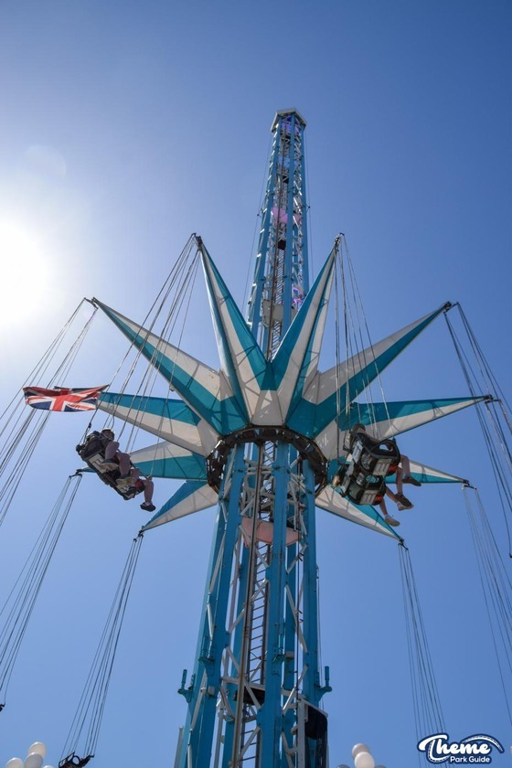

Height
70m (229 ft)
Type
Swing Ride
Price
£5.00
Included with Any Wristband
About this Ride
Standing at an impressive 70 meters (229 ft), Starflyer is the tallest attraction at Fantasy Island. Previously operated at Hyde Park Winter Wonderland, this thrilling swing ride owned by the Mellors Group offers breathtaking views of the surrounding area. Riders experience an exhilarating combination of height and circular motion as they soar high above the park.